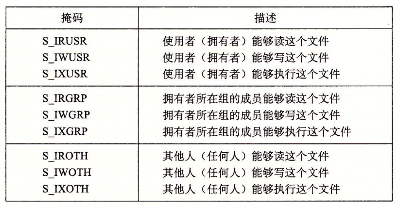
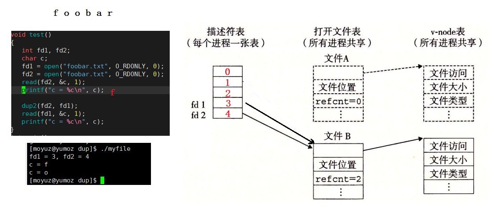

理解hello
文件
打开和关闭文件
mode参数指定了新文件的访问权限位。当进程通过带有某个mode参数的open函数调用来创建一个新文件时，文件访问权限被设置为mode & ~umask。接下来，创建文件，此文件拥有者有读写权限，而其他用户都有读权限：

上图展示访问权限位，在sys/stat.h中定义。
一次一个字节地从标准输入赋值到标准输出。
char c;
while(read(STDIN_FILENO, &c, 1) != 0)
write(STDOUT_FILENO, &c, 1);
exit(0);
ssize_t & size_t区别？
``` SYNOPSIS #include
ssize_t pread(int fildes, void *buf, size_t nbyte, off_t offset); ssize_t read(int fildes, void *buf, size_t nbyte);```
观察上述代码，read函数，有一个size_t的输入参数，和一个ssize_t的返回值，却别在，在x86-64系统中，size_t被定义为unsigned long，而ssize_t（有符号的大小）被定义为long。read函数返回的是一个有符号的大小，而不是一个无符号大小，因为：
RETURN VALUE Upon successful completion, read() and pread() shall return a non-negative integer indicating the number of bytes actually read. Otherwise, the functions shall return -1 and set errno to indicate the error.read出错必须返回-1.
RIO包健壮地读写
10.6节
共享文件
清楚内核是如何表示打开的文件，内核用三个相关的数据结构来表示打开的文件：
- 描述符表（descriptor table）每个进程都有它独立的描述符表，它的表项是由进程打开的文件描述符来索引的。每个打开的描述符表项指向文件表中的一个表项。
- 文件表（file table）打开文件的集合是由一张文件表来表示的，所有进程共享这张表。每个文件表的表项组成(针对我们的目的)包括当前的文件位置、引用计数(reference count)(即当前指向该表项的描述符表项数)，以及一个指向v-node表中对应表项的指针。关闭一个描述符会减少相应的文件表表项中的引用计数。内核不会删除这个文件表表项，直到它的引用计数为零。
- v-node表（v-node table），同文件表一样，所有的进程共享这张v-node表。每个表项包含stat结构中大多数信息，包括st_mode和st_size成员。


父子进程共享相同的打开文件集合，因此共享相同的文件位置。
#include<iostream>
#include <unistd.h>
#include <fcntl.h>
#include <stdio.h>
#include <stdlib.h>
#include <sys/wait.h>
using namespace std;
int main()
{
int fd;
char c;
fd = open("foobar.txt", O_RDONLY, 0);
if(fork() == 0){
read(fd, &c, 1);
printf("child run : %c\n", c);
exit(0);
}
wait(NULL);
read(fd, &c, 1);
printf("c = %c\n", c); //输出结果 o
exit(0);
}
重定向
SYNOPSIS
#include <unistd.h>
int dup(int fildes);
int dup2(int fildes, int fildes2);
int dup2(int oldfd, int newfd);//重定向到了oldfd中
dup2函数赋值描述符表项oldfd到描述符表项newfd，覆盖描述符表项newfd以前内容。如果newfd已经打开，dup2会在复制走了大幅度之前关闭newfd。
int main()
{
int fd = open("file.txt", O_CREAT | O_RDWR, 0644);
if(fd < 0){
perror("open error");
return 1;
}
dup2(fd, 1); // 将 stdout重定向到 fd（file.txt）
printf("hello yumoz nice too meet you\n");
exit(0);
}

一个程序来测试
